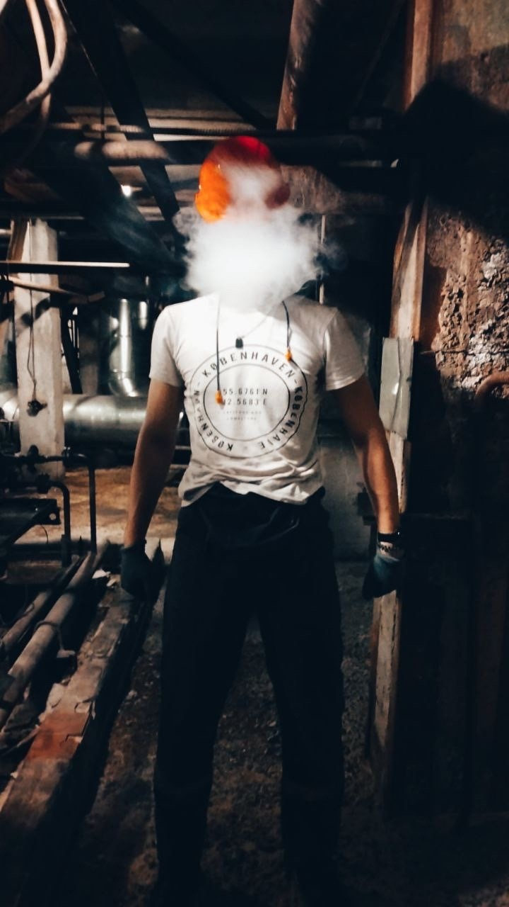

Если после диагностики выполняется ремонт, восстановление или замена — она бесплатна.
Обычно занимает от 10 минут до 1,5–2 часов — зависит от неисправности.Мастер Иван · Солнечнодольск
Техника снова
в строю.
Ремонт, диагностика и настройка компьютеров, ноутбуков и другой техники. Сначала разбираюсь в причине и согласую стоимость — затем приступаю к работе.
Наши услуги
Установка Windows
Установка и настройка операционной системы.
Чистка ПК и ноутбуков
Удаление пыли и обслуживание системы охлаждения.
Замена термопасты
Обслуживание процессора и видеокарты.
Диагностика и ремонт
Поиск неисправностей и устранение проблем.
Сборка компьютеров
Подбор комплектующих и сборка ПК.
Драйверы, программы и настройка
Установка драйверов и необходимого ПО.
Удаление вирусов
Проверка системы и устранение вредоносных программ.
Апгрейд компьютеров
Улучшение производительности компьютера.
Также работаю с PlayStation, PSP, роутерами и серверами. Ремонт телефонов беру реже.

ВАШ МАСТЕР
Знакомьтесь, Иван
Меня зовут Иван. Я самоучка, около восьми лет занимаюсь диагностикой, настройкой, восстановлением и ремонтом техники. В эту сферу пришёл через компьютерные игры и интерес к дизайну интерьера.
Больше всего люблю находить сложные ошибки, восстанавливать устройства и прошивать технику. Работаю с ПК, ноутбуками, PlayStation, PSP, роутерами и серверами; телефоны беру реже.
Более 8 лет
Практики и самообучения
Гарантия
Условия обсуждаем заранее
Стоимость и условия
Стоимость типовых работ согласуем до начала. Никаких скрытых доплат.
Цена зависит от выбранных деталей и их стоимости на момент заказа. Сначала согласуем состав и сумму.
Принимаю наличную и безналичную оплату. Гарантия предоставляется; срок и условия обсуждаем до начала работ.
Связаться с мастером
Солнечнодольск
Основной формат — работа на дому; выезд к клиенту тоже возможен.
Обычно работаю в Солнечнодольске. Другие населённые пункты Ставропольского края — по срочной договорённости.
Лучше записаться заранее: совмещаю ремонт с основной работой. Срочные заказы и приоритет согласуем отдельно.
+7 (938) 342-06-28